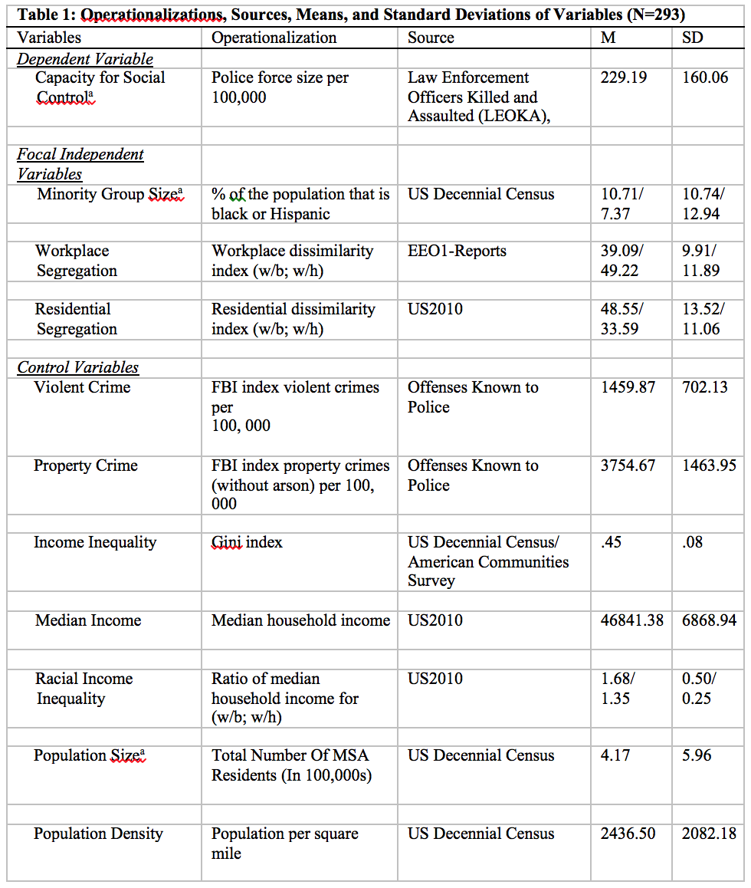
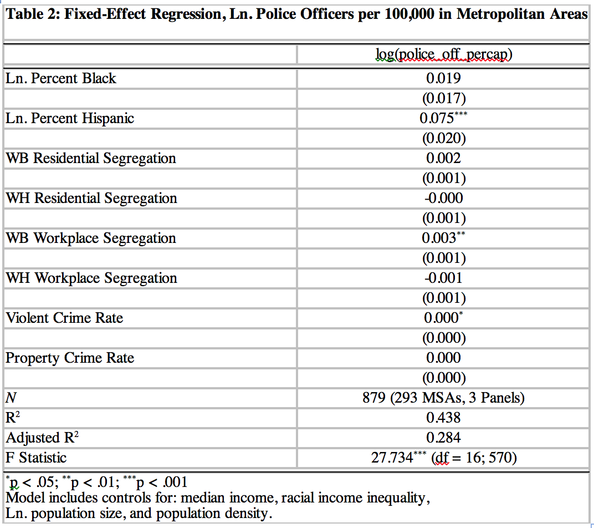

We Can Work It Out
The Unintended Consequences of Workplace Integration for Urban Crime Control
Chris E. Rees
Sociology, SUNY-Albany
Center for Human Services Research, SUNY-Albany
WHY studying workplace segregation matters?
- Work is both an activitiy and an ecological setting
- This setting can have a wide range of non-pecuniary effects
- Workplace experiences are shaped by segregation patterns
- These patterns vary geographically
- How might these patterns shape the urban context in which they are derived?
WHAT is missing from the literature on urban crime control?
- Focus on minority population size
- Limited testing of segregation's impact on social control outcomes
- Focus has been exclusively on residential patterns of racial contact
- Mixed findings in this respect
Theory and Literature
HOW can we explain the relationship between workplace segregation and urban crime control?
- Racial threat theory
- Economic threat
- Political threat
- Integration may serve to exacerbate these feelings
HOW can we explain the relationship between workplace segregation and urban crime control?
- Contact hypothesis
- Increased contact ameliorates out-group stereotypes
- Reducing inequality
- Creating meaningful communication
- Workplace may matter more
- More likely to meet on the same terms
- Contact moves beyond the superficial and creates social investment
- Buoyed by institutionalized supports
Data and Methods
HOW did I analyze the data?
- Metropolitan areas
- Lived in space
- Patterns of residential and worplace segregation
- Dissimiliarity scores
- Measure evenness
- Fixed-Effects Model
- Controls for all fixed-variables (e.g. Region)
- Reduces variable omission bias
- Hausman/Breusch–Pagan
HOW did I analyze the data?

Results
WHAT I found?

WHAT I found?
- Significant, but small effect for white-black workplace segregation
- No significant effects for white-hispanic workplace segregation
- Measures of black population concentration and residenital segregation fail to gain significance
Future Directions and Conclusions
WHAT comes next?
- Extending research examining the effects of workplace segregation
- Incorporating population change and interaction effects
- Examining the effects of ethnoracial interaction in other domains
- Theorizing and testing their different impacts
Thank You!
chriscerees@albany.edu
webhttp://www.albany.edu/chsr/
slideshttp://cerees.github.io/everify_diffusion_slides